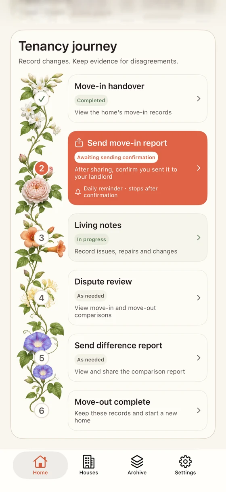
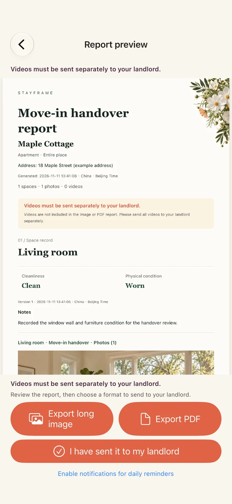

Move-in inspection
Record cleanliness and physical condition separately. Photograph existing marks, wear and damage, and add videos or written notes.
iPhone · iOS 17 or later
Make a room-by-room record when you get the keys. Compare it at move-out and share a clear condition report with your landlord.
Records stay on your iPhone. No account required.

Start with the spaces you rent and use the same rooms again when you move out.
Record cleanliness and physical condition separately. Photograph existing marks, wear and damage, and add videos or written notes.
Add dated observations and keep communication attachments with the relevant record. Revisit earlier versions when a condition changes.
Compare move-in and move-out observations for the same space. Choose relevant rooms for a difference report and record your handover and deposit outcome.
This preview uses an example home. A Stayframe report groups observations by room and includes photos and notes. Export it as a PDF or image so your landlord can review the same record you see.

Start with a wide photo of each room, then capture close-ups of existing marks, damaged fixtures or other conditions you want to discuss. Add notes so it’s clear where each item was found.
Yes. Preview and export the report as a PDF or image. Share video files separately and confirm in Stayframe once you’ve sent the report.
Stayframe organizes records for discussion. The report does not determine responsibility, provide legal advice or guarantee a deposit outcome.